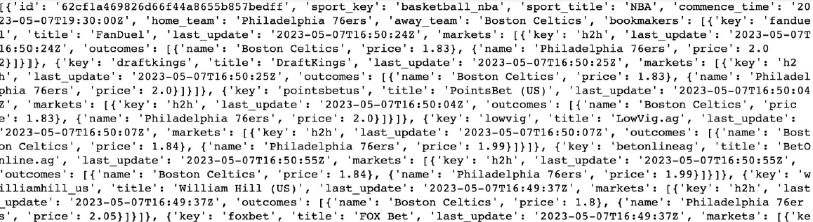
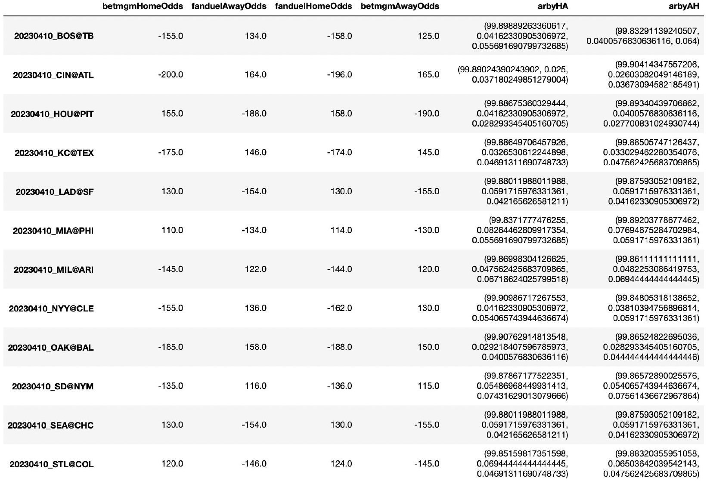

×
This passion project of mine that I brought to Cornell Data Science involved finding opportunities to
exploit arbitrage via sportsbook webscraping, JSON parsing, and arbitrage calculations. Arbitrage
is defined as a scenario where two different sportsbooks have alternate odds expectations on a matchup;
because of this, placing bets on both sides of the match in both sportsbooks can theoretically make the
risk zero.
I utilized BeautifulSoup to scrape data from American and offshore sportsbooks, while overseeing
Python request management as some sportsbooks prevent to many pings to their data. Further, I extraced
JSON data from a third-party odds aggregating API, and parsed through large responses to get the necessary
data we needed (sportsbooks names, odds for both teams, etc. for all matchups in the sport).


Shown above is a sample API output from the third-party service. I had to go through this large
dictionary of data and develop a class structure in Python to store "events", and then identify the key
tags that were critical for an arbitrage calculation on a matchup. The right image shows a Pandas
dataframe from another third-party API for a series of baseball games. As indicated by the arbyHA and
arbyAH columns, the higher the first percentage in the tuple the more likely an arbitrage opportunity
exists.
We found that over all opportunities found, arbitrage trading led to higher profits in 46.3% of scenarios
compared to traditional betting on the favorite. This project was interesting in examining an alternative
betting strategy by leveraging computer science fundamentals, but also demonstrated that such a strategy
is most likely not feasible for most people unless they have a large amount of data and capital to gamble
on.